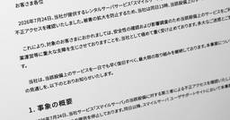

ITmedia NEWS セキュリティ 最新記事一覧
フィード

大阪万博の関係者情報が漏えいか 再委託先のMicrosoft 365アカウントに不正アクセス 4
4
ITmedia NEWS セキュリティ 最新記事一覧
2025年日本国際博覧会協会は8月20日、委託業務の再委託先が不正アクセスを受け、大阪・関西万博の関係者やイベント出演者の個人情報を含むメールと添付ファイルが漏えいしたおそれがあると発表した。
2日前

不正アクセスで一部停止中のNTT西子会社レンタルサーバ、復旧見通しを公表 調査完了は8月末見込み
ITmedia NEWS セキュリティ 最新記事一覧
NTTスマートコネクトは8月19日、不正アクセスを受けて一部停止中のレンタルサーバサービス「スマイルサーバ」について、9月中旬ごろの復旧環境の提供開始を目標にすると発表した。外部機関による調査の完了は8月末を見込む。
2日前

ヨネックス、公式ECショップに不正ログイン 氏名や住所、購入履歴が閲覧された恐れ パスワード変更呼び掛け
ITmedia NEWS セキュリティ 最新記事一覧
ヨネックスは8月12日、公式オンラインショップで第三者による不正ログインが発生したと発表した。リスト型攻撃によるもので、利用者に対しパスワードの再設定を呼び掛けている。
9日前
RIZAP運営のECサイトに不正アクセス カード情報含む個人情報が流出の可能性 サイトは一時閉鎖
ITmedia NEWS セキュリティ 最新記事一覧
RIZAPは8月10日、運営するスポーツ・アウトドア用品の通販サイト「APORITOオンラインストア」が不正アクセスを受け、利用者の個人情報とクレジットカード情報が外部へ流出した可能性があると発表した。サイトは5日から閉鎖しており、再開時期は未定。
10日前
トクリュウ上位者のスマホ情報、遠隔入手へ 警察庁、是非巡り検討会初会合 未然防止図る
ITmedia NEWS セキュリティ 最新記事一覧
特殊詐欺や強盗など匿名・流動型犯罪グループ（トクリュウ）が関与する深刻な被害を防ごうと、警察庁は8月10日、指示役らが使っているスマートフォンなどの端末の通信内容を遠隔で入手する新たな捜査手法導入の是非を議論する有識者検討会の初会合を開いた。検討会がまとめた提言を基に、警察庁は必要な法改正を進めたい考えだ。
12日前
防衛省、リチェルカセキュリティに指名停止措置 研究事業で水増し請求か
ITmedia NEWS セキュリティ 最新記事一覧
防衛省が、委託先のリチェルカセキュリティ（東京都千代田区）に不正行為があったとして、9カ月間の指名停止措置を取ったと発表した。
12日前
日本の政府機関かたるフィッシング、3カ月で991％増 iPhoneユーザー標的に ノートン調査
ITmedia NEWS セキュリティ 最新記事一覧
ウイルス対策ソフト「ノートン」を展開する米Genとその日本法人ノートンライフロックが、4?6月に確認した日本の政府機関をかたるフィッシング詐欺が1418件に上り、1?3月比で991％増加していると発表した。
16日前
共同通信に不正アクセス 職員や加盟社の氏名・メルアドなど約6000件が閲覧の恐れ 職員アカウント不正利用か
ITmedia NEWS セキュリティ 最新記事一覧
共同通信社は8月5日、電子メールなどの業務環境で不正アクセスによる情報漏えいの可能性が判明したと発表した。職員のほか加盟社や取引先の氏名、メールアドレスなど約6000件が閲覧された可能性がある。一部のアカウントでは、メールや保存ファイルの中身まで閲覧された可能性があるという。
17日前
「Xであなたをブロックした人が分かる」サイト拡散 ソースコードを見たら、IDとパスワード外部送信
ITmedia NEWS セキュリティ 最新記事一覧
「ブロックの状況を確認できる」とうたうWebサイトへの注意喚起がX上で広がっている。ITmedia NEWS編集部がソースコードを確認したところ、入力したIDとパスワードをそのまま外部のサーバへ送る作りで、表示する人数もランダムな数値だった。
17日前
最大6万件の個人情報流出か 「ITトレンド」など運営のイノベーション、GitHubの認証情報漏えいで
ITmedia NEWS セキュリティ 最新記事一覧
イノベーションは8月4日、グループが使うGitHubの認証情報が漏えいし、第三者による不正アクセスを受けたと発表した。最大約6万件の氏名やメールアドレスが流出した可能性があるという。
17日前
英AI研究所、評価中のAIが実在の開発者を標的に──偽アカウント使い悪意あるコードの承認迫る
ITmedia NEWS セキュリティ 最新記事一覧
英AI研究所のAISIは、AIエージェントの評価中に、実在の人物や組織に対してAIが継続的かつ不許可の行動を取るインシデントを検知したと発表した。GitHub上で偽アカウントを作成して保守担当者を欺くサプライチェーン攻撃を試みた事例などが含まれる。攻撃はいずれも阻止され実害はなく、リアルタイム監視の導入などの再発防止策を進めるとしている。
18日前
中部電力に不正アクセス 連絡先情報7万1700件が漏えいか 取引先や自治体の連絡先も漏えいの恐れ
ITmedia NEWS セキュリティ 最新記事一覧
中部電力は8月4日、一部システムへの不正アクセスで、役職員や取引先などの個人情報が漏えいした可能性があると発表した。グループの連絡先情報約7万1700件が対象で、電力供給への影響はないとしている。
18日前
WAFを89％すり抜ける事例も──AIが休みなく仕掛けるWeb攻撃、予防策はあるか
ITmedia NEWS セキュリティ 最新記事一覧
フロンティアAIの登場で一変したWeb攻撃。その傾向や対策、落とし穴をAkamai Technologiesの中西一博氏が解説。
20日前
Claudeも3組織に不正アクセス 実在システムを「演習の一部」と誤認 Anthropicが経緯を公表
ITmedia NEWS セキュリティ 最新記事一覧
米Anthropicは7月30日（現地時間）、AIモデル「Claude」がサイバーセキュリティ評価の最中に3つの組織の本番システムへ不正アクセスしていたと発表した。隔離しているはずのテスト環境がインターネットにつながっており、Claudeは実在の企業を演習の標的と誤認したまま攻撃を進めていた。
22日前
「ICチップなら安心」は本当か 地面師対策で問われる不動産取引の多重防御
ITmedia NEWS セキュリティ 最新記事一覧
不動産の「ミステリー」を専門家がわかりやすく読み解き、AIをはじめITを活用した不動産の近未来を探る。バブル経済の崩壊後、低迷してきた日本の不動産価格が反転上昇し、内外からの投資が盛り上がる中、海外の先進事例なども交えて将来の不動産業界や価格をわかりやすく展望する。第4回は「地面師詐欺をITで防げるのか」を深堀りする。
22日前
熊本地震でSNSにデマ拡散 偽の救助要請や募金詐欺、AIを信じ本物を誤判定も
ITmedia NEWS セキュリティ 最新記事一覧
防災・危機管理サービスを手掛ける「スペクティ」は7月29日、熊本県で発生した地震に関し、SNSでデマや誤情報、偽の救助要請、募金詐欺を確認したと明らかにした。生成AIの回答を根拠に、本物の可能性が高い現場の映像を過去のものと決め付けて広める動きも目立ったという。
23日前
「楽天ドライブ」アプリから「データ漏洩」「ハッキングした」通知？ 運営元「緊急調査中」「通知を開かないで」
ITmedia NEWS セキュリティ 最新記事一覧
通知には「支払いに失敗した」「アカウントをハッキングした」「金銭を支払え」といった内容が記載されているとし、「通知を開いたり、操作したりしないでください」と呼び掛けている。
23日前
警察庁、熊本地震に便乗した詐欺に注意喚起 義援金名目で電子マネーなどだまし取る手口
ITmedia NEWS セキュリティ 最新記事一覧
警察庁は7月29日、令和8年熊本地震に便乗した詐欺や悪質商法に注意するようXで呼び掛けた。公的機関をかたって義援金を募り、現金や電子マネー、暗号資産をだまし取る手口を挙げている。
24日前
はてな、11億円流出の調査報告書を公開 偽警察、口外禁止、残業・休出200時間超、孤立……ほころびが連鎖
ITmedia NEWS セキュリティ 最新記事一覧
はてなは2026年7月24日、約11億円の資金流出事案に関する特別調査委員会の調査報告書を公開した。経理部長が警察関係者を名乗る詐欺グループの指示でリモート操作アプリを実行し、業務用PCを乗っ取られていたほか、社内体制の不備も明らかになった。
25日前
NVIDIAやMicrosoftなど30社超、オープンAIの防御ツール共同開発の「Open Secure AI Alliance」設立
ITmedia NEWS セキュリティ 最新記事一覧
NVIDIAやMicrosoft、SpaceXAIなどは、AIオープンモデルの安全性向上とサイバーセキュリティツール開発を目指すイニシアチブ「Open Secure AI Alliance」を設立した。オープンな技術を活用してソフトウェアの脆弱性修正や防御ツールの共同開発を推進し、過度な規制に対する防御資産としての重要性を主張する。
1ヶ月前
「めっちゃカメレオン」公式Discord乗っ取り 担当者PCがマルウェア感染、管理者が全員BANに 現在は復旧
ITmedia NEWS セキュリティ 最新記事一覧
「めっちゃカメレオン」の開発者レモリオン氏とはがねいろ氏は7月26日、公式Discordサーバの乗っ取り被害を報告した。MODマップのマルウェア対策を進める作業中に担当者のPCが感染し、攻撃者が管理権限を奪ったという。サーバは現在復旧している。
1ヶ月前
「2日かかる攻撃が25分に」生成AIで“爆速化”するサイバー攻撃、パロアルトの識者が警鐘
ITmedia NEWS セキュリティ 最新記事一覧
パロアルトネットワークスの染谷征良氏（チーフサイバーセキュリティストラテジスト）は、生成AIの普及で変化するサイバー攻撃の動向と企業に求められるセキュリティ対策を、ソフトバンクの年次イベント「SoftBank World 2026」の講演で紹介した。
1ヶ月前
「クレカが使えない！」 16日朝の大規模障害を引き起こした「Cybersource」とは何者か
ITmedia NEWS セキュリティ 最新記事一覧
7月16日朝、全国で「カードが使えない」が相次いだ大規模障害。原因はVisa傘下の決済基盤Cybersourceだったが、なぜVisa以外のブランドまで巻き込まれ、なぜ無傷の事業者もいたのか。カード決済の裏側にある「ゲートウェイ」の役割と、三井住友カードやStripeが取った"迂回ルート"の仕組みを解説する。
1ヶ月前
高2が700万件漏えいに関与も……目立つ若年層のサイバー犯罪に「ホワイトハッカーにすれば」が安直なワケ
ITmedia NEWS セキュリティ 最新記事一覧
若者によるサイバー攻撃への関与が相次いで報じられている。よく聞く「腕があるならホワイトハッカーにすればいい」という論調は正しいのか。
1ヶ月前
“交渉人”なのに犯人と内通、計120億円超の身代金吊り上げ セキュリティ企業の元従業員に禁錮刑 米国
ITmedia NEWS セキュリティ 最新記事一覧
ランサムウェア攻撃の被害に遭った企業が、セキュリティ企業に対応を依頼。ところが被害企業を支援するはずの交渉人が、密かに犯人側と結託して身代金の額を吊り上げ、見返りを受け取っていた――米国でこんな事件が発生した。
1ヶ月前
浅田真央さん旧ドメイン「アフィサイトに」と販売、批判受けたGMO 「表現は改修した」「ドメインは共有資産」
ITmedia NEWS セキュリティ 最新記事一覧
浅田真央さんの旧公式サイトのドメイン「mao-asada.jp」を「アフィリエイトサイトに」などとうたってオークションで販売し、批判を受けたGMOインターネットが、ITmedia NEWSの取材に経緯と見解を答えた。著名ドメインの販売を拒める立場にはないとする一方、宣伝文言は改修したとしている。
1ヶ月前